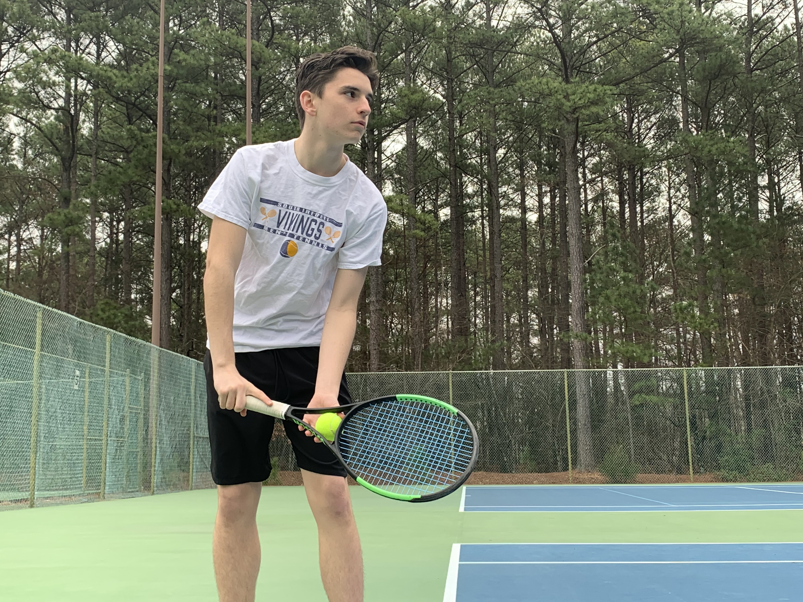

About Me
My Story

fill me
|
Community Involvement
|

As a sixth-year IB student actively pursuing the Congressional Award, I am well aware of the inherent value that community service has on helping others. In my continuous pursuit to serve my community, I have completed over 200 community service hours since 6th grade, with 150 of those hours being from my time as a high school student. To provide a wide range of meaningful service, I have held active roles for a variety of organizations, all of which have had a significant impact on me and the improvement of the community.
For the past seven years, I have been a community volunteer for Saint Therese Catholic Church. I altar serve on Sunday mornings, cook meals at the annual Thanksgiving Dinner for those in need, act as an event leader for the annual Vacation Bible School week-long camp, and much more. As a Community Awareness Volunteer, I represent the Ada Jenkins Center at local community events. To spread awareness of the Center and our Mission, I assist with activism and connect with officials and community members about our services, and I help organize and expand our scope of influence through participation at community events. As a Docent, I work with the Director of Development to organize and lead volunteer training. I educate groups of new volunteers about the economic hardships of which many experience, different opportunities to make a difference, and lead tours of the Ada Jenkins Center. I am also a Red Cross Blood drive leader, having hosted my last blood drive on January 4th, 2020, and planning on hosting more in the future. |
Extracurriculars
|
- Founder and President of South Iredell's FBLA Chapter (7
months)
- Student Ambassador (2 years) - Team Captain and first seed on the Varsity Tennis Team (3 years) - 1st chair Alto Saxophone for South Iredell Marching Band (2 years) - Chairman of the South Iredell Stock Market Club (2 years) - 1st chair Alto Saxophone for the South Iredell Jazz Band (3 years) - Junior Class Representative of the Science National Honor Society (6 months) - In school tutor for the Math Club (6 months) - Member of the Spanish National Honor Society (1 year) - Member of the English National Honor Society, Math National Honor Society, Nationol Honor Society, and Beta Club (6 months) - Member of the South Service squad (community service club) (3 years) - Community Awareness Volunteer and Docent for the Ada Jenkins Center - Bronze Congressional Award Medal Holder, acively pursuing silver - Red Cross Blood Drive Leader - Co-founder and Business Plan Organizer for non-profit organization: Sweetpuddles. Link to website: https://sweetpuddles.com/ - Community Volunteer for Saint Therese Catholic Church - Member of the Lake Norman Tennis Center - Continuing to update self coded website. Website is a self-portfolio and where I upload self writen buisiness research papers. At www.micktobin.com. - Member of the Mooresville Youth Council |
Exploring My Passion
|
The significant part about the business world is how vast it is. There is so much to explore in the vast business world. The best way to explore is by gaining real-world experience. That is why I am continually looking for opportunities to shadow or work with real professionals. Below are internships/shadowings that I have participated in or am confirmed to attend.
December 15th, 2019 - Shadowing Rafici Dahan - Head of Capital Market Operations and Risk Management for Bank of America June 2020 - A Confirmed internship with Rafic Dahan - Head of Capital Market Operations and Risk Management for Bank of America July 2020 - A Confirmed internship with Jason Ferrouni - Marketing Manager of Willis Towers Watson May 2020 - A Confirmed internship with Sylvia Spury - Executive President for the Lake Norman Chamber of Commerce I have been accepted to the NC State Shelton Leasership Challenge Week and the Wake Forrest Summer Immerson Program. Recently, I have also submitted my application for the Martha Guy Summer Institute and am waiting to hear back. |
What I Enjoy
|
- Reading
- Film making - Tennis - Cooking - Politics - Running - Playing Saxophone |
Focus
|
fill me
|
If you are interested in learning more about me, please explore my resume or contact me. (both hyperlinked)